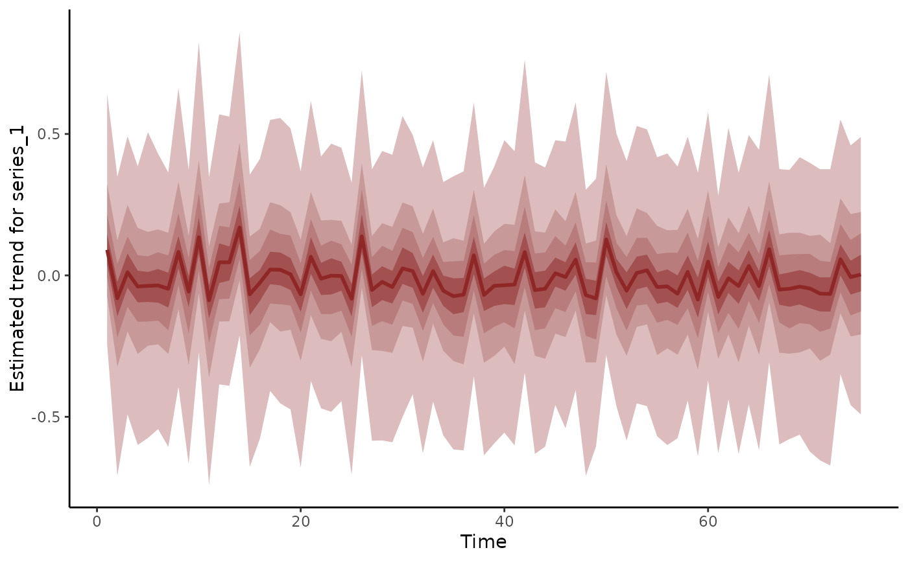
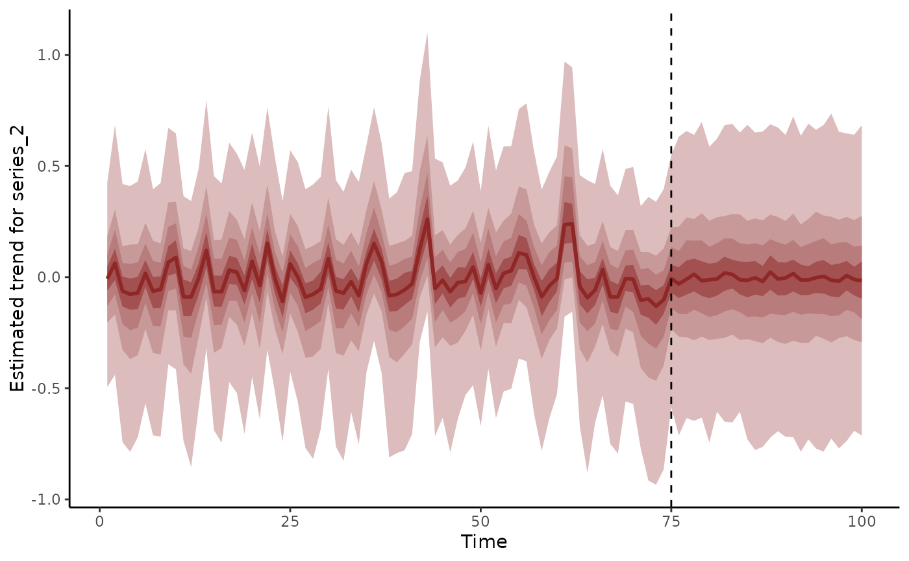
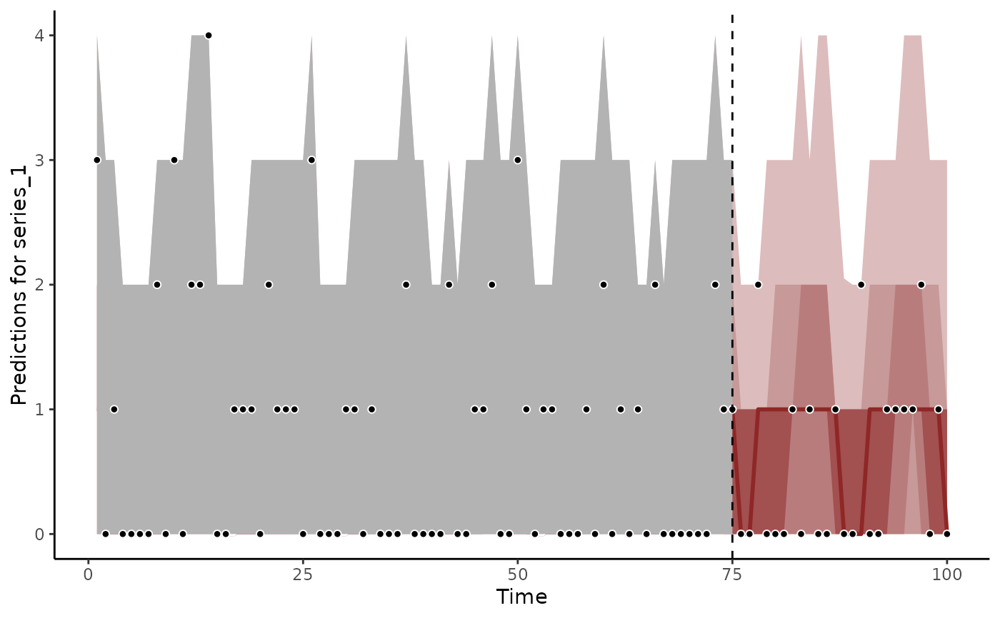
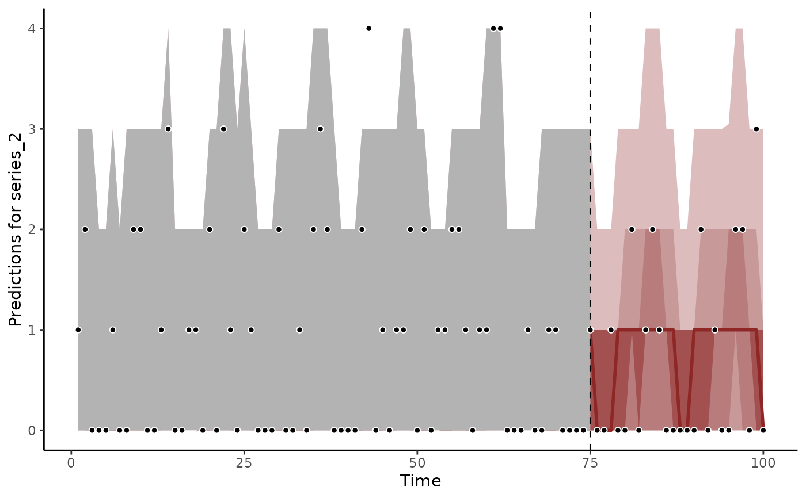

Plot latent trend predictions from mvgam models
Usage
plot_mvgam_trend(
object,
series = 1,
newdata,
data_test,
realisations = FALSE,
n_realisations = 15,
n_cores = 1,
derivatives = FALSE,
hide_xlabels = FALSE,
xlab,
ylab,
...
)Arguments
- object
listobject returned frommvgam. Seemvgam()- series
integerspecifying which series in the set is to be plotted- newdata
Optional
dataframeorlistof test data containing at least 'series' and 'time' in addition to any other variables included in the linear predictor of the originalformula.- data_test
Deprecated. Still works in place of
newdatabut users are recommended to usenewdatainstead for more seamless integration intoRworkflows- realisations
logical. IfTRUE, posterior trend realisations are shown as a spaghetti plot, making it easier to visualise the diversity of possible trend paths. IfFALSE, the default, empirical quantiles of the posterior distribution are shown- n_realisations
integerspecifying the number of posterior realisations to plot, ifrealisations = TRUE. Ignored otherwise- n_cores
integerspecifying number of cores for generating trend forecasts in parallel- derivatives
logical. IfTRUE, an additional plot will be returned to show the estimated 1st derivative for the estimated trend- hide_xlabels
logical. IfTRUE, no xlabels are printed to allow the user to add custom labels usingaxisfrom baseR. Ignored ifderivatives = TRUE- xlab
label for x axis.
- ylab
label for y axis.
- ...
further
pargraphical parameters.
Examples
# \donttest{
simdat <- sim_mvgam(n_series = 3, trend_model = 'AR1')
mod <- mvgam(y ~ s(season, bs = 'cc', k = 6),
trend_model = AR(),
noncentred = TRUE,
data = simdat$data_train,
chains = 2)
#> Compiling Stan program using cmdstanr
#>
#> Start sampling
#> Running MCMC with 2 parallel chains...
#>
#> Chain 1 Iteration: 1 / 1000 [ 0%] (Warmup)
#> Chain 2 Iteration: 1 / 1000 [ 0%] (Warmup)
#> Chain 1 Iteration: 100 / 1000 [ 10%] (Warmup)
#> Chain 2 Iteration: 100 / 1000 [ 10%] (Warmup)
#> Chain 1 Iteration: 200 / 1000 [ 20%] (Warmup)
#> Chain 2 Iteration: 200 / 1000 [ 20%] (Warmup)
#> Chain 1 Iteration: 300 / 1000 [ 30%] (Warmup)
#> Chain 1 Iteration: 400 / 1000 [ 40%] (Warmup)
#> Chain 2 Iteration: 300 / 1000 [ 30%] (Warmup)
#> Chain 1 Iteration: 500 / 1000 [ 50%] (Warmup)
#> Chain 1 Iteration: 501 / 1000 [ 50%] (Sampling)
#> Chain 2 Iteration: 400 / 1000 [ 40%] (Warmup)
#> Chain 2 Iteration: 500 / 1000 [ 50%] (Warmup)
#> Chain 2 Iteration: 501 / 1000 [ 50%] (Sampling)
#> Chain 2 Iteration: 600 / 1000 [ 60%] (Sampling)
#> Chain 1 Iteration: 600 / 1000 [ 60%] (Sampling)
#> Chain 2 Iteration: 700 / 1000 [ 70%] (Sampling)
#> Chain 1 Iteration: 700 / 1000 [ 70%] (Sampling)
#> Chain 2 Iteration: 800 / 1000 [ 80%] (Sampling)
#> Chain 2 Iteration: 900 / 1000 [ 90%] (Sampling)
#> Chain 1 Iteration: 800 / 1000 [ 80%] (Sampling)
#> Chain 2 Iteration: 1000 / 1000 [100%] (Sampling)
#> Chain 2 finished in 1.0 seconds.
#> Chain 1 Iteration: 900 / 1000 [ 90%] (Sampling)
#> Chain 1 Iteration: 1000 / 1000 [100%] (Sampling)
#> Chain 1 finished in 1.2 seconds.
#>
#> Both chains finished successfully.
#> Mean chain execution time: 1.1 seconds.
#> Total execution time: 1.3 seconds.
#>
# Plot estimated trends for some series
plot_mvgam_trend(mod)

plot_mvgam_trend(mod, series = 2)
# Extrapolate trends forward in time and plot on response scale
plot_mvgam_trend(mod, newdata = simdat$data_test)
plot_mvgam_trend(mod, newdata = simdat$data_test, series = 2)

# But it is recommended to compute extrapolations for all series
# first and then plot
trend_fc <- forecast(mod, newdata = simdat$data_test)
plot(trend_fc, series = 1)
#> Out of sample DRPS:
#> 30.838185

plot(trend_fc, series = 2)
#> Out of sample DRPS:
#> 21.396171

# }